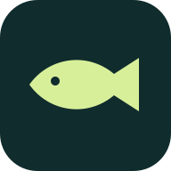

MeraKişisel av rehberiBugünkü av tahmini
Dalga eşiği
7 günlük plan
Mera karşılaştır
Meralarım
Deniz derinliği haritası
EMODnet görüntüleyicisinde Bathymetry katmanını açıp Gemlik Körfezi veya Mudanya kıyısına yakınlaş.
Derinlik haritasını aç · Dip habitatı kaynaklarıMera ısı haritası
Etkin moddaki kayıtlı meralar için sonraki 24 saatin en yüksek deneysel av puanı.
Deniz tabanı
Haritadan koordinatı bulup aşağıya ekleyebilir veya telefonunun konumunu kullanabilirsin.